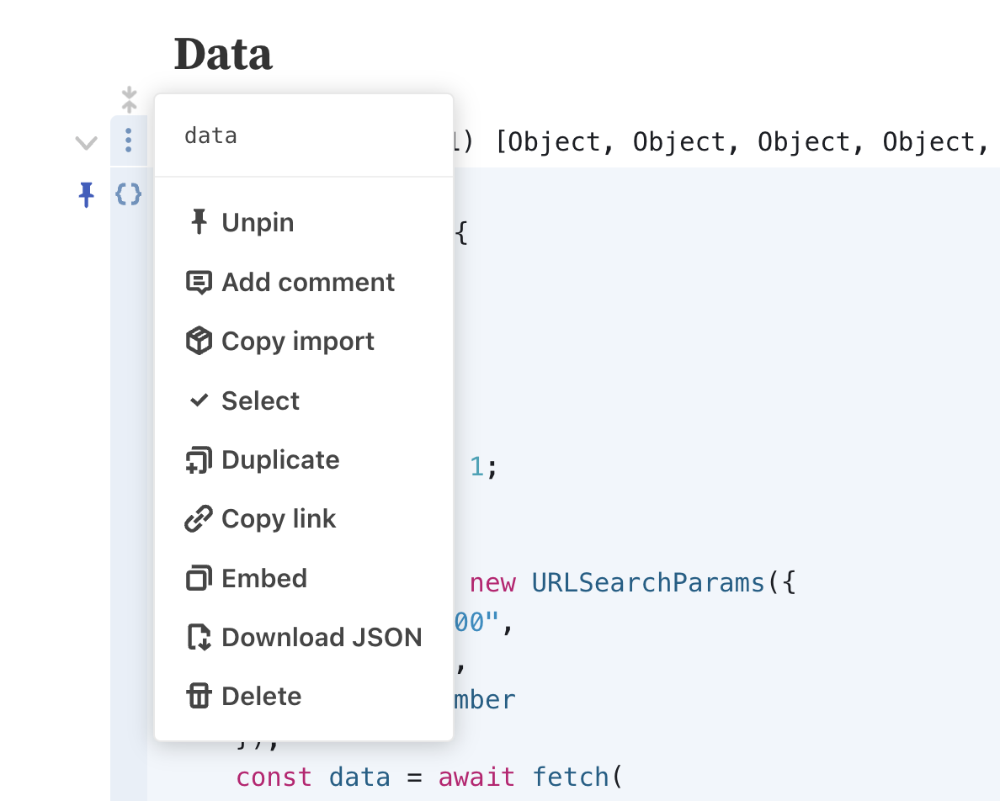

GitHub Issues & PRs
Collecting feedback from users and customers is an easy way to end up with an enormous amount of unstructured text data, even when there is useful structured data associated with it. For example, managing a popular open source repository can lead to hundreds of issues and pull requests.
Let's use Observable Plot as an example, not only is it the visualization library I'm using for these analyses, with issues ( open) and pull requests ( open) there is a lot of feedback to sort through.
To get the data we'll use the excellent GitHub Burndown notebook, where you could enter your own API key to fetch all the issues & PRs for a repository you control. You can download the resulting data via Observable's interface like so: 
The notebook itself provides some interesting visualizations focused around when issues are opened and closed:

We want to focus on the contents of the issues, and just like in our Datavis Survey example, just scrolling through a table and reading every issue isn't practical at all:
So again, we use Latent Scope's process to create a map of our unstructured text data:
The map is created by going through the 4 step process in Latent scope:
- Embed - run each piece of text through an embedding model
- Project - run the high-dimensional embeddings through UMAP
- Cluster - run the 2-dimensional UMAP coordinates through HDBSCAN
- Label - ask an LLM to create a label by summarizing a list of text taken from each cluster
So at the end of this process we have clusters carving up our issues and pull requests. Every row of our input data is annotated with a cluster index and label:
We've essentially added some new structure that we can use to filter and group our data, while still attaching the valuable structured metadata we already had.
For example, one thing we might be interested in is the cluster with the most open issues:
We might also be interested in which cluster has the most comments, as that can be another indication of how much interest in (or struggles with) certain concepts users are having.
It would also be great to get insight into the clusters as a whole. We can create a data table that displays key metrics computed for each cluster. We can then also click on the radio button next to each cluster to select it and view it in more detail. Sorting the table allows us to investigate the various metrics we may care about in relation to the clusters.
Click on the radio button on the left of each cluster in the table above to select it and see the details in the card below
At the end of the day, the insights to be found depend heavily on your relationship to the dataset. If this was your repository it might be more illuminating who is opening the issues or pull requests. It could be that some clusters represent recently added features and when the issues are opened matters more.
The important thing is to take a look, with Latent Scope you can easily export your annotated data and analyze it in the tool of your choice. Personally, I've been enjoying Observable Plot inside Observable Framework to make this site with my exported scopes.